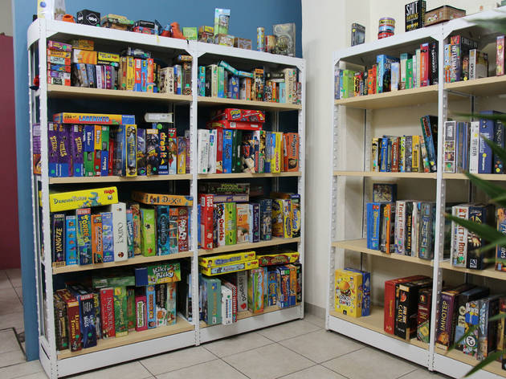
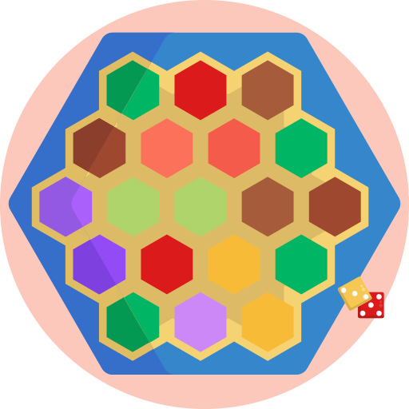
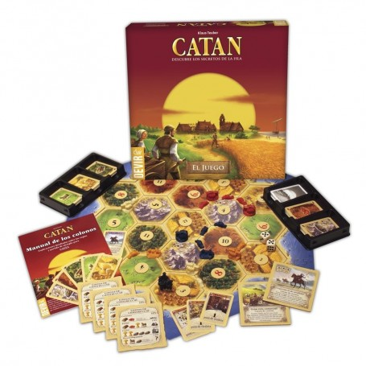
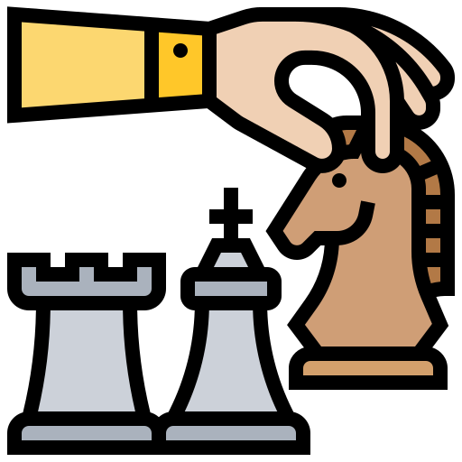
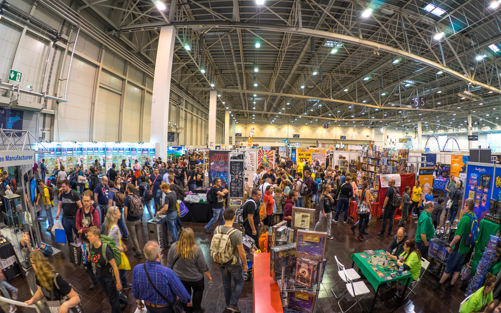

En este tema se abordará algunos aspectos de todo lo que abarcan los juegos de mesa en la
sociedad, desde los últimos años,
pues es cuando los juegos de mesa han tenido un auge que sigue en crecimiento en muchas
partes del mundo como México, España y
Estados Unidos, entre otros países. Resulta que con la última pandemia, este tema se dio a
conocer tanto así, que se ha vuelto
un tema que merece toda la atención, pues podría llegar a ser tan importante como la música,
la pintura y demás piezas artísticas.
Usted que está leyendo esto no se preocupe, se abordará el tema desde cero, por lo que no
hay que ser un gran conocedor de este tema que,
curiosamente, es bastante grande.
Desarrollo
Empecemos con la definición de qué es un juego de mesa. Juego de mesa es la clasificación que
se da a los juegos que constan de un tablero
y fichas de diferentes formas y colores, lo que obliga a que se organice sobre una
superficie plana, generalmente una mesa, de ahí su nombre.
Muchos conocemos a los clásicos juegos de mesa, aquellos que uno ha jugado por lo menos una
vez quiera o no, como el ajedrez, el monopoly, o el
uno, sin embargo, esto no es mas que la punta del iceberg de este mundo de los juegos de
mesa, y lo curioso es que los juegos de mesa pueden llegar
a ser algo más que solo un medio de entretenimiento.
Así pues, auque hablando recreativamente uno puede encontrar infinidad de juegos con
infinidad de maneras de ser jugados, variedad entre
el arte de estos juegos y su significado, investigando más, uno puede toparse con cosas
interesantes como por ejemplo: un juego de mesa en braile llamado
"Macedomix", el cual fue hecho para enseñar a los niños pequeños el lenguaje de braile. Pero
entonces ¿Son los juegos de mesa mero entretenimiento?¿Existen
otros juegos de mesa que eduquen?¿Y de qué manera educan?¿Acaso los juegos de mesa ayudan a
expresar emociones?¿Los juegos de mesa son cultura?
Bueno, todas estas preguntas se irán abordando poco a poco en el presente blog.
Motivación
Escogí este tema debido a que en la actualidad tengo una afición por los juegos de mesa, es
algo que me entretiene mucho, sin embargo, esto no siempre
fue así. En un inicio, no me atraían los juegos de mesa, los encontraba aburridos, pero un
día, indagando en internet, descubrí todo el mundo que se ocultaba
sobre los juegos de mesa y entonces quedé maravillado. Desde entonces, me ha parecido
injusto que debido a que como la mayoría de la gente piensa como yo al inicio,
no le han dado la relevancia a este tema que tanto merece. Por eso, quiero que con este blog
anime a más personas a descubrir este fabuloso tema.

Esta imagen es una prueba de lo extenso que puede ser el mundo de los juegos de
mesa.
 Los juegos de mesa casuales más divertidos en el mundo
12/11/21
Empecemos el tema preguntándonos, cuando pensamos en juegos de mesa ¿Cuáles son los juegos de
mesa que se nos vienen
a la mente? Uno, Monopoly o ajedrez, ¿no es así? Si pensamos en más juegos, podríamos
encontrar algunos más como Scrabble o Rummy.
Normalmente, uno ya no podría pensar más, siempre pasa, sin embargo, para este blog quiero
que nos quitemos esa creencia de que
los juegos de mesa son solo juegos para niños, y quiero que noten que este tema es demasiado
amplio como para tomarlo a la ligera.
Por eso, para empezar, les traigo una lista de los 10 juegos de mesa clásicos casuales más
divertidos del mundo para que, si gustan, los investiguen
y puedan comenzar a comprender qué tan amplio es este mundo (Aunque apenas es la punta del
iceberg).
Dixit
Cluedo
Jenga
Scrabble
Cluedo
UNO
La Polilla Tramposa
Monopoly
Carcassonne
Catan

"Catan", uno de los mejores juegos de mesa que jamas hayan existido, pues
combina muy bien lo casual de muchos juegos con
lo estratégico de muchos otros, siendo un juego bueno sin importar la edad o si ya has
jugado o no a otros juegos de mesa.
Sitios oficiales de juegos de mesa
12/11/21
A pesar de que en este blog se intentará ser lo más neutro posible, debido a que por momentos
se meterán opiniones del autor o de otras páginas que,
al final de cuentas, son también opiniones de otros autores, aquí se exponen algunas fuentes
oficiales de información. Algunos sí son fuentes oficiales, pero
como no hay muchas de esas por el escaso reconocimento de este tema, algunas son solo
noticias o crónicas demasiado confiables.
La "Board Game Geek", o también nombrada "bgg", es la página más immportante de
juegos de mesa. Aquí uno puede encontrar cualquier información de cualquier juego de
mesa, como calificación de usuarios, reseñas, dudas, etc.
Maneras de clasificar a los juegos de mesa
28/11/21
Por: Andrés del canal de youtube "Los 3 Legendarios Sannin" el 2 de febrero del
2019
Ya vimos cuáles son algunos de los juegos de mesa casuales más divertidos, incluso hablamos
del Catan, que es un juego de mesa muy importante para la gente que juega a estos juegos y
hasta para los diseñadores. Así entonces, podemos empezar a indagar más en este tema.
En esta ocasión, vamos a hablar de los distintos tipos de juegos de mesa, pues, si no lo
sabía, existen diversos tipos de juegos de mesa, los cuáles tienen distintos enfoques y lo
que ha permitido la existencia de tantos juegos de mesa. Para esto, traigo el video que
pueden observar al inicio de esta entrada.
En mi opinión, este video es excelente, pues nos informa claramente los distintos tipos de
juegos de mesa, con información precisa, corta, y que, aunque ya hayan pasado dos años,
sigue siendo muy verídica, por lo que permite a cualquiera entenderlo. Además, la música de
fondo hace más ameno el video, por lo que puede captar la atención de uno. De verdad, si
quiere saltarse el video y seguir con el rsto del blog, no se lo recomiendo, pues estaría
perdiendo una valiosa fuente de información.
Investigación
17/12/21
Importancia de los juegos de mesa para el desarrollo de los niños
En el primer artículo habíamos tocado un poco por encima el tema de que los juegos de mesa
ayudan a las personas, así que esta vez vamos a indagar más en eso. Los juegos de mesa nos
puede ayudar a todos. Es un hecho. Sin embargo, uno de los ámbitos donde más se muestra esto
es con los niños. Cuando un niño se encuentra en desarrollo, es muy importante que sepa
desenvolverse en su entorno, pero no solo eso sino también el fomentar el desarrollo de las
habilidades. Así entonces, si les dijera que los juegos de mesa pueden facilitar eambas
tareas, ¿me creerían?
Es interesante ver que los juegos de mesa son otra manera de poder mejorar
capacidades de todo tipo, es por esto que siendo niño, un juego de mesa puede llegar a
ser muy importante para el menor, pues como dicen Arias Castilla, Buitrago
Milena, Camacho Amaya y Vanegas Yolima en una investigación: Resulta de gran importancia
avanzar en las propuestas de juegos de mesa diferentes que permitan a los niños y niñas
adquirir conocimiento en variedad en temáticas. Se hace indispensable la generación de
nuevos espacios que permitan fomentar el aprendizaje significativo en los niños y
niñas.1
Centrándonos en esta investigación antes mencionada, en ella se habla de un experimento donde
se puso a prueba si es que los niños mejoraban sus habilidades con los juegos de mesa en
comparación a antes de jugarlos y, si esto era así, buscar qué juegos mejoraban qué
características y habilidades, concentrándose en las hablidades de comunicación oral y
corporal. Así se experimentó con diversos juegos de mesa y diversos niños. Ejemplos de los
resultados fueron los siguientes:
Estrategia de oralidad
En la investigación se encuentran más datos igual de interesantes que los
anteriores, pero el punto de todas es demostrar con hechos que los juegos de mesa ayudan a las
habilidades cognitivas, motrices y sociales de los niños pequeños. Si nos detenemos a
pensarlo, esto podría llegar a ser algo obvio, pero a la vez interesante, pues dependiendo
del juego es la habilidad que van a desarrollar, por ejemplo: en el ajedrez mejorarían la
toma de decisiones, en el Doubble, el actuar bajo estrés, en el Scrable, el vocabulario y
así con otros juegos.
Importancia para el desarrollo de los discapacitados
Ya hablamos sobre la importancia que tienen los juegos de mesa para las habilidades de los
niños en desarrollo, sin embargo la utilidad o provecho que se le puede sacar a los juegos
de mesa no se queda solo ahí, pues puede escalar a otro tipo de personas que también les de
oportunidades de mejora, pues mi objetivo es dejar en claro que esto de los juegos de mesa
es algo que no se puede dejar de lado, es una realidad que cuanto antes aceptemos, mejor.
Por esto, ahora hablarémos de los discapacitados.
Ya lo dice Xavier Vinyals en su artículo "El juego y las personas con discapacidad":Jugar
es comunicarse, es ser miembro de un colectivo, es participar con los demás, es pasar un
buen rato, es experimentar, es aprender. Y si jugar es todo esto es difícil ver la
exclusión de una persona porque quizá no vea, o no pueda correr o no sea capaz de tener
un aprendizaje de la lecto-escritura dentro de la enseñanza regulada.2 Aquí Xavier
hace una importante y muy necesaria aclaración de qué significa jugar, todo con el objetivo
de entender el derecho de los discapacitados de disfrutar también.
Hasta ahora hemos estado hablando de este aspecto de los discapacitados con rodeos, así que
aterricemos ideas. Los discapacitados tienen todo el derecho como nosotros de
disfrutar estar en compañía al jugar. No por no poder ver, no poder hablar, no poder es
correcto que los excluyamos y es por eso que hay que luchar para incluirlos en nuestra
vida, como por ejemplo, en los juegos de mesa, todo con el objetivo de que no
se sientan mal por tener esas carencias que muchos no sufrieron, carencias que les pudieron
cerrar muchas puertas.
Ahora bien, ¿cómo se logra esta inclusión de los discapacitados en los juegos de mesa? Porque
hay que entender que no es fáacil tratar con ellos. No digo que esté mal hablar con ellos,
sino solo complejo. Para esto existen varias maneras. La primera es buscar por ahí
"extensiones" o "complementos" que permitan una mayor accesibilidad hacia los
discapacitados. La otra opción es buscar y, si se pudiera, apoyar los nuevos proyectos que
van surgiendo que consisten en juegos hechos desde un principio para personas con
discapacidad. Soluciones hay, solo hay que tener el valor de buscarlas.
Importancia para los adultos mayores
Un último sector al que le edeberíamos dar prioridad (Por ser de los más vulnerables) es el de los
adultos mayores. Este sector es muy importante porque ha sido igual de rezagado que el de
los discapacitados, e injusta de la misma manera que este último. Esto no debería ser así
pues estas personas han tenido tanta experiencia que dejarlos por ahí "abandonados" en
asilos es desprestijiar sus logros de vida y su sabidurpia. Esto es un error que no podemos
seguir cometiendo y menos cuando empiezan a surgir armas en contra de estas injusticias
como, en este caso, los juegos de mesa.
Investigando por internet me di cuenta de que para este sector (Adultos mayores) no hay tantos experimentos como en los anteriores sectores (niños y descapacitados) donde se busque comprobar que los juegos de mesa permiten el desarrollo de ciertas habilidades, pues en este
caso ya se da por sentado ese hecho y, en lugar de ser comprobado, los archivos y sitios web solo redactan su progreso del empleo de juegos en adultos mayores o ancianos con el objetivo de darle más color a sus vidas. Aún con este cambio, no quita que la información que se
encuentra es interesante.
Aún a pesar de ya no haber fuentes donde "experimenten" con los adultos mayores, aún así se encuentra información valiosa sobre ellos, pues se puede observar cómo estos adultos mayores mejorar en su vida social y se van sintiendo más relajados mientras más tiempo va pasando.
Así, la mayoria recaen en el mismo objetivo: Se busca aliviar el sentimiento de soledad a través de actividades sociales y recreacionales pasando un buen momento en compañía de otras personas de su edad. Se desea aumentar sus oportunidades de socializar y mejorar la
calidad de vida dentro de su entorno3.
Con esto acabaríamos de ver los casos de los tres sectores más marginados en esta sociedad y cómo son ayudados por los juegos de mesa. Ahora bien, los demás sectores no se quedan atrás, pues adultos y adolescentes también pueden llegar a ser beneficiados por los juegos de mesa
de la misma manera que los niños en desarrollo y los ancianos, es decir, mejorando sus habilidades sociales, de liderazgo, carisma e incluso habilidad matemática, lógica y de trabajo en equipo. Así entonces podemos encontrar una similitud entre los videojuegos y los juegos de
mesa.
Uno de los mejores aportes que dan los juegos de mesa es en los núcleos familiares, siendo una gran diferencia con los videojuegos.
El ajedrez y su historia
07/02/22
Por: Dante Alejandro García Cruz el 07 de Febrero del 2022El ajedrez ha cautivado a muchísimas personas debido a toda la historia que hay detrás y la complejidad de este juego, al tener demasiadas posibilidades por hacer. Esto asegura que cada juego sea diferente, siendo que solo gana el que sea más estratégico.
El competitivo en los juegos de mesa
21/02/22
¿Cómo funcionan estos torneos?
En cada competencia de juegos de mesa podemos encontrar diferentes organizaciones de éstas. Un modo muy común de proceder será que los jugadores empiezan compitiendo a nivel de torneo de tienda. Si lo ganan, consiguen un pase especial para el siguiente torneo que consiste en tener la primera partida ganada. Este jugador ganador estará dentro del grupo de los mejores jugadores. Esto consistiría en el sistema suizo. De esta manera, los jugadores que vayan ganando se enfrentarán contra los que hayan ganado también y los que pierdan contra los que han perdido, compitiendo unos con otros de su mismo nivel.
Debido a este sistema, algunos jugadores toman la estrategia de empezar perdiendo para poder competir contra jugadores teóricamente de un nivel más bajo. Ya que están en un nivel superior o inferior, las victorias al final del juego van a valer lo mismo. Existen infinidad de torneos, empezando por pequeños torneos de tienda, luego torneos regionales, torneos nacionales, hasta torneos mundiales. Otra estrategía de los jugadores de juegos de mesa de competición es estudiar a sus contrarios. Por ejemplo, en los juegos de cartas tendrán que saber las cartas que tienen los contrincantes, para saber cómo luchar contra ellos (pues no todos tienen las mismas cartas en este tipo de juegos).
¿Porqué la gente accede a jugar estos torneos?
Es interesante si nos ponemos a pensar que a los jugadores competitivos les atrae mucho la adrenalina, esos nervios que activan, ayudan a concentrarte y jugar sin errores la partida. Como en cualquier competición, uno debe mantener la calma, estar concentrado y entender que lo importante es disfrutar.
Muchos jugadores explican que al pasar al nivel de competición se le da más vida a los juego de mesa. Así los jugadores se entretienen más, pues logran entender mejor a los juegos de mesa gracias a todo lo que deben de saber del juego que están jugando para poder tener un buen papel en las competencias. Los premios que pueden conseguir en estos torneos pueden ser hasta viajes a Estados Unidos o Europa. Pero a muchos, lo que realmente les hace ilusión es la posibilidad de ganar complementos de estos juegos personalizados y únicos. No solo esto, sino también la experiencia que se vive y la gente que uno logra conocer.
Se puede decir que entonces tanto la información de las competencias, así como el inicio de estas, se da en los mismos lugares, las tiendas de juegos de mesa. Esto es así por los contactos que tienen los dueños de estas tiendas, que les permite conocer antes que nadie estas competencias.
La premiación en los juegos de mesa
25/03/22
Los premios Spiel Des Jahres
Así como entre las personas se realizan torneos de juegos de mesa, también se han creado premiaciones de éstos (Similares a los Óscars o a los Globos de Oro). Uno de los más famosos son los "Spiel des Jahres", que significa "Juego del Año" en alemán. Es un galardon para el que compiten juegos de mesa y juegos de cartas. Fue creado en 1978 con el objetivo de poder premiar y fomentar una gran calidad en la producción de juegos de mesa alemanes. El solo hecho de ser nominado a un Spiel des Jahres puede incrementar las ventas típicas de 500-3000 copias hasta las 10.000; un ganador del mismo puede esperar vender entre 300.000 y 500,000 copias. Debido a eso, estas premiaciones se han vuelto muy importantes alrededor del mundo para la gente dedicada a jugar o crear juegos de mesa.
Para dar estos premios, los juegos son revisados por un jurado germano-hablante que evalúa con base a un "Estilo alemán", que consiste en juegos donde la mecánica es lo más importante y la temática queda solo como un pretexto para su existencia. Es por esto que el jurado a veces da el premio al juego más complejo, acostumbrándose tanto a esto que decidieron crear una nueva categoría para estos juegos, llamada "Kennerspiel des Jahres". El jurado evalúa con base en el comcepto, estructura de las reglas, aspecto y diseño.
Los premios Spiel Des Jahres, aunque parezca que no tienen mucha relevancia en otros países que no sean Alemania, es todo lo contrario. Para la gente más entregada a los juegos de mesa, es muy seguro que alguno de sus juegos favoritos sea uno alemán. En el mercado mundial se ha notado esta influencia Alemana, siendo que muchos de los juegos de mesa más famosos en todo el mundo prevengan de este país. Juegos como "Azul", "Cartógrafos", "Wingspan", "Terraforming Mars", "Splendor", "Dixit", "Pandemic", entre otros, son ejemplos de juegos alemanes ganadores de este premio que han sido inmortalizados en la historia de los juegos de mesa que uno podría encontrar por lo menos uno en cuaquier top. A los premios alemanes les debemos muchísimos si de nutrir esta comunidad se refiere.
Los premios Golden Geeks Awards
Esta premiación se da en Texas, donde puede competir cualquier juego de mesa de todo el mundo. Estas premiaciones iniciaron en 2006 y las más destacables diferencias con los anteriores premios son dos: La premiación se da con base en la comunidad, y ha tenido menos relevancia que los Spiel Des Jahres (Dato altamente interesante). Estos premios le han ayudado mucho a la página "Board Game Geek" de consolidarse como una página de confianza y oficial, además de que ha permitido a los juegos ganadores poder vender más copias, pero realmente no logran ni suplantar ni superar a los premios alemanes.

Paralelamente a la premiación alemana, se convocan reuniones en las cuales la gente puede ir a jugar los nuevos lanzamientos de ese país. Funciona similar a la COMICON.

.png) Investigación
Investigación
 El competitivo en los juegos de mesa
El competitivo en los juegos de mesa
 La premiación en los juegos de mesa
La premiación en los juegos de mesa